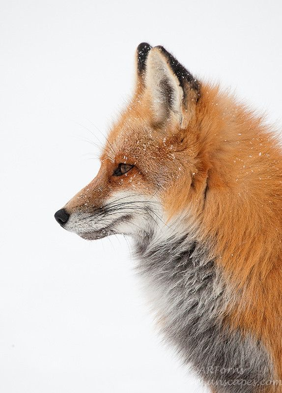

Volpe
Generalità
Anche se è classificato come carnivoro, in realtà la volpe è onnivora.
Il loro peso varia tra i 3 kg e gli 11 kg.
E' presente in tutto l'emisfero boreale.
Mangia piccoli roditori, conigli, uccelli, rettili, invertbrati, ungulati,frutta e verdura.

Curiosità
- Emette suonidi diversa tonalità.
- Animale sacro in Giappone.
- Le zampe anteriori hanno cinque dita, mentre quelle posteriori ne hanno quattro.